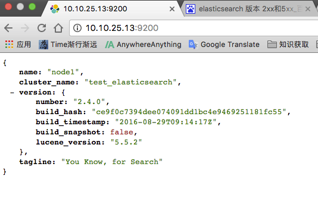
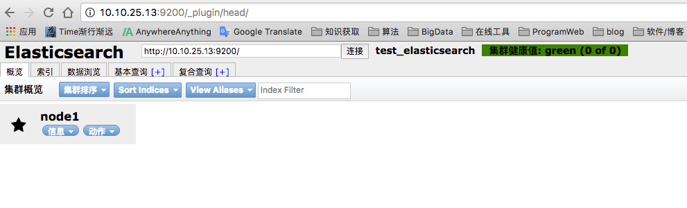
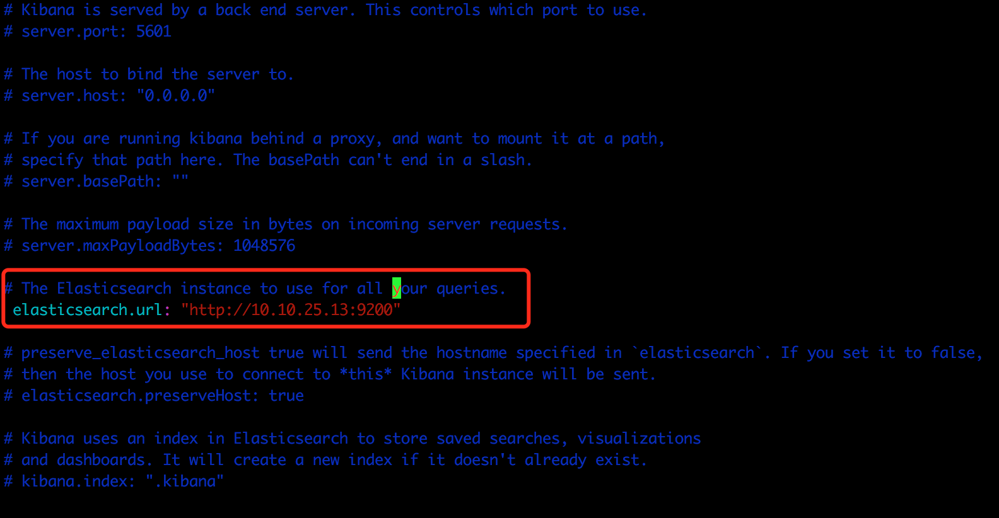
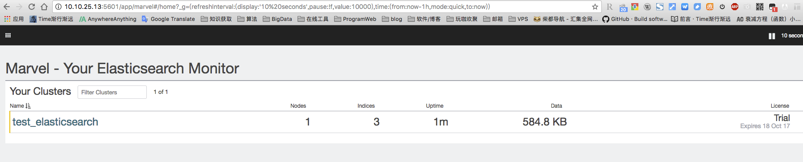
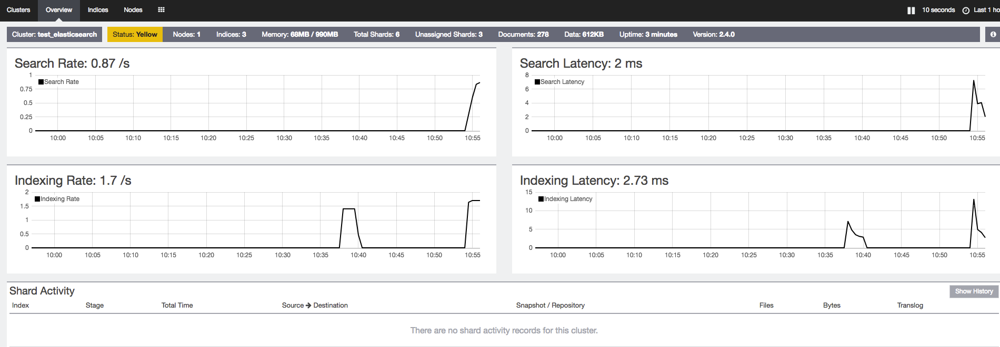
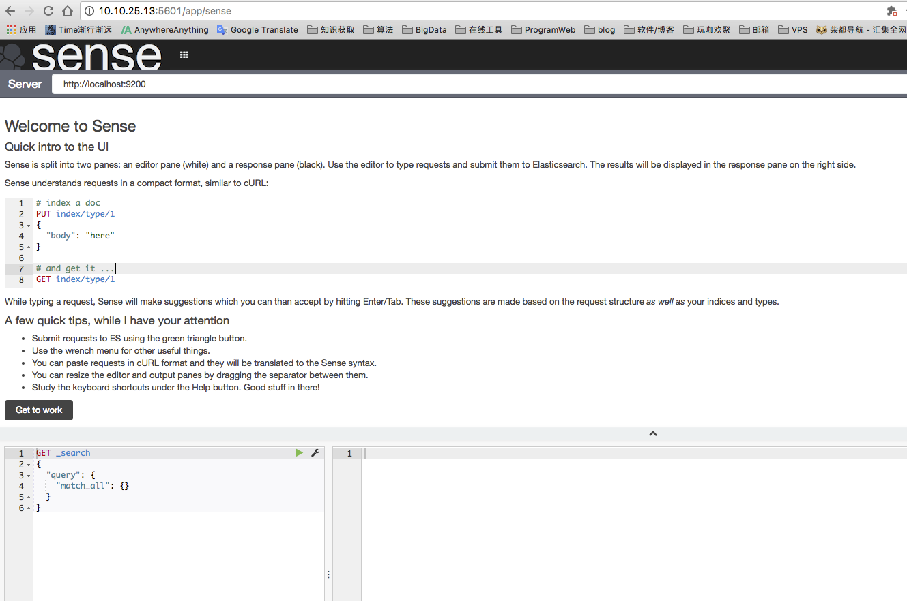
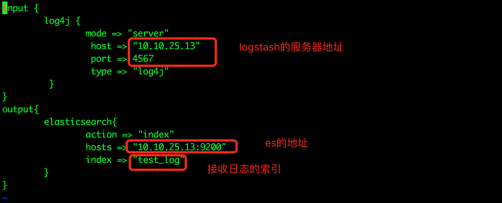
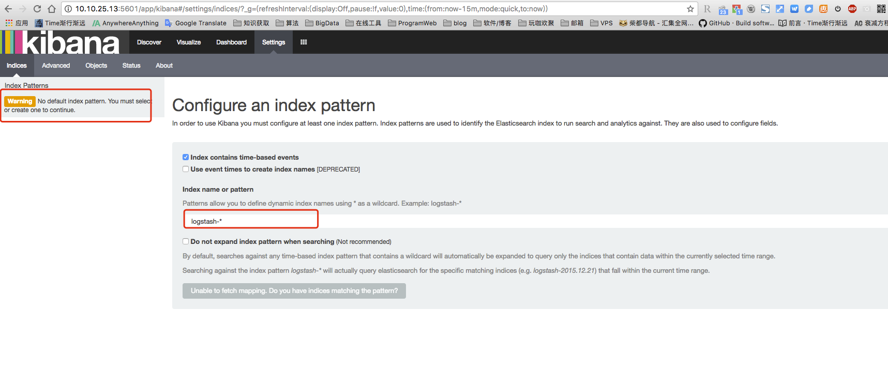
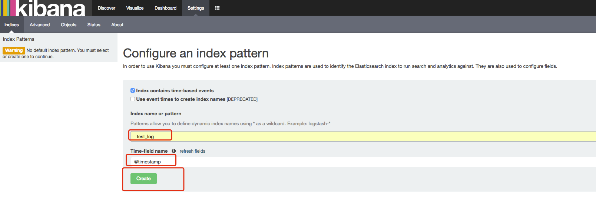
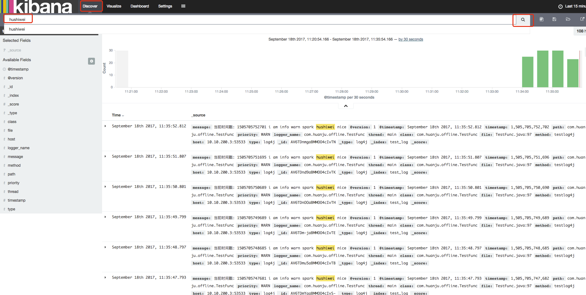

elk搭建记录,学习资料.
ELK学习资料
ELK下载
历史版本下载地址 : https://www.elastic.co/downloads/past-releases
+ elasticsearch : 2.4.0
+ logstash : 2.4.0
+ kibana : 4.6.2
安装准备
[root@U006 opt]# cd /opt
[root@U006 opt]# mkdir elk
[root@U006 opt]# chown -R hadoop:hadoop elk
[root@U006 opt]# su hadoop
[hadoop@U006 opt]$ cd /opt/elk/
[hadoop@U006 elk]$ mkdir jars
[hadoop@U006 jars]$ pwd
/opt/elk/jars
# 上传jar包
[hadoop@U006 jars]$ ll
total 116996
-rw-r--r-- 1 hadoop hadoop 27364449 Sep 18 09:36 elasticsearch-2.4.0.tar.gz
-rw-r--r-- 1 hadoop hadoop 34125464 Sep 18 09:37 kibana-4.6.2-linux-x86_64.tar.gz
-rw-r--r-- 1 hadoop hadoop 58310656 Sep 18 09:41 logstash-2.4.0.tar.gz
[hadoop@U006 elk]$ ll
total 16
drwxrwxr-x 6 hadoop hadoop 4096 Sep 18 09:45 elasticsearch-2.4.0
drwxrwxr-x 2 hadoop hadoop 4096 Sep 18 09:40 jars
drwxrwxr-x 11 hadoop hadoop 4096 Oct 21 2016 kibana-4.6.2-linux-x86_64
drwxrwxr-x 5 hadoop hadoop 4096 Sep 18 09:47 logstash-2.4.0
安装elasticsearch
测试环境搭建,单节点为例
# 解压elasticsearch
tar -zxvf elasticsearch-2.4.0.tar.gz -C /opt/elk/
修改配置文件config/elasticsearch.yml
[hadoop@U006 config]$ pwd
/opt/elk/elasticsearch-2.4.0/config
[hadoop@U006 config]$ ll
total 8
-rw-rw-r-- 1 hadoop hadoop 3192 Aug 24 2016 elasticsearch.yml
-rw-rw-r-- 1 hadoop hadoop 2571 Aug 24 2016 logging.yml
[hadoop@U006 elasticsearch-2.4.0]$ vim config/elasticsearch.yml
# 打开这三个配置的注释
cluster.name: test_elasticsearch # es集群名字
node.name: node1 # 该节点在es中的名字
network.host: 0.0.0.0 # 任意节点可以访问
启动es
./bin/elasticsearch
./bin/elasticsearch -d #后台启动
[hadoop@U006 elasticsearch-2.4.0]$ ./bin/elasticsearch
[2017-09-18 10:08:50,300][WARN ][bootstrap ] unable to install syscall filter: seccomp unavailable: requires kernel 3.5+ with CONFIG_SECCOMP and CONFIG_SECCOMP_FILTER compiled in
[2017-09-18 10:08:51,697][INFO ][node ] [node1] version[2.4.0], pid[3098], build[ce9f0c7/2016-08-29T09:14:17Z]
[2017-09-18 10:08:51,697][INFO ][node ] [node1] initializing ...
[2017-09-18 10:08:52,332][INFO ][plugins ] [node1] modules [lang-groovy, reindex, lang-expression], plugins [], sites []
[2017-09-18 10:08:52,363][INFO ][env ] [node1] using [1] data paths, mounts [[/home (/dev/mapper/VolGroup-lv_home)]], net usable_space [195.3gb], net total_space [857.4gb], spins? [possibly], types [ext4]
[2017-09-18 10:08:52,363][INFO ][env ] [node1] heap size [989.8mb], compressed ordinary object pointers [true]
[2017-09-18 10:08:54,472][INFO ][node ] [node1] initialized
[2017-09-18 10:08:54,473][INFO ][node ] [node1] starting ...
[2017-09-18 10:08:54,675][INFO ][transport ] [node1] publish_address {10.10.25.13:9300}, bound_addresses {[::]:9300}
[2017-09-18 10:08:54,685][INFO ][discovery ] [node1] test_elasticsearch/oAbAZR_tTaGAJU-5yd3BqQ
[2017-09-18 10:08:57,757][INFO ][cluster.service ] [node1] new_master {node1}{oAbAZR_tTaGAJU-5yd3BqQ}{10.10.25.13}{10.10.25.13:9300}, reason: zen-disco-join(elected_as_master, [0] joins received)
[2017-09-18 10:08:57,798][INFO ][http ] [node1] publish_address {10.10.25.13:9200}, bound_addresses {[::]:9200}
[2017-09-18 10:08:57,799][INFO ][node ] [node1] started
[2017-09-18 10:08:57,811][INFO ][gateway ] [node1] recovered [0] indices into cluster_state
打开http://10.10.25.13:9200/ 将会看到以下内容.返回数据中包含配置的cluster.name和node.name,以及es的版本等信息.

安装插件
elasticsearch-head 插件安装
下载安装
# 进入bin目录下
[hadoop@U006 bin]$ ./plugin install mobz/elasticsearch-head
-> Installing mobz/elasticsearch-head...
Trying https://github.com/mobz/elasticsearch-head/archive/master.zip ...
Downloading ...............................................................................................................................................................................................................................................................................................................................................................................................................................................................................................................................DONE
Verifying https://github.com/mobz/elasticsearch-head/archive/master.zip checksums if available ...
NOTE: Unable to verify checksum for downloaded plugin (unable to find .sha1 or .md5 file to verify)
Installed head into /opt/elk/elasticsearch-2.4.0/plugins/head
使用说明
head插件是一个用浏览器跟ES集群交互的插件，可以查看集群状态、集群的doc内容、执行搜索和普通的Rest请求等。
在浏览器中直接访问接口 http://10.10.25.13:9200/_plugin/head/ ,可以看到es集群状态

安装Marvel插件
下载安装
# ./bin/plugin install license
# ./bin/plugin install marvel-agent
[hadoop@U006 elasticsearch-2.4.0]$ ./bin/plugin install license
-> Installing license...
Trying https://download.elastic.co/elasticsearch/release/org/elasticsearch/plugin/license/2.4.0/license-2.4.0.zip ...
Downloading .......DONE
Verifying https://download.elastic.co/elasticsearch/release/org/elasticsearch/plugin/license/2.4.0/license-2.4.0.zip checksums if available ...
Downloading .DONE
Installed license into /opt/elk/elasticsearch-2.4.0/plugins/license
[hadoop@U006 elasticsearch-2.4.0]$ ./bin/plugin install marvel-agent
-> Installing marvel-agent...
Trying https://download.elastic.co/elasticsearch/release/org/elasticsearch/plugin/marvel-agent/2.4.0/marvel-agent-2.4.0.zip ...
Downloading ..........DONE
Verifying https://download.elastic.co/elasticsearch/release/org/elasticsearch/plugin/marvel-agent/2.4.0/marvel-agent-2.4.0.zip checksums if available ...
Downloading .DONE
@@@@@@@@@@@@@@@@@@@@@@@@@@@@@@@@@@@@@@@@@@@@@@@@@@@@@@@@@@@
@ WARNING: plugin requires additional permissions @
@@@@@@@@@@@@@@@@@@@@@@@@@@@@@@@@@@@@@@@@@@@@@@@@@@@@@@@@@@@
* java.lang.RuntimePermission setFactory
* javax.net.ssl.SSLPermission setHostnameVerifier
See http://docs.oracle.com/javase/8/docs/technotes/guides/security/permissions.html
for descriptions of what these permissions allow and the associated risks.
Continue with installation? [y/N]y
Installed marvel-agent into /opt/elk/elasticsearch-2.4.0/plugins/marvel-agent
# 安装的插件都会出现在es的plugins目录下
[hadoop@U006 elasticsearch-2.4.0]$ ll
total 56
drwxrwxr-x 2 hadoop hadoop 4096 Sep 18 09:45 bin
drwxrwxr-x 3 hadoop hadoop 4096 Sep 18 10:05 config
drwxrwxr-x 3 hadoop hadoop 4096 Sep 18 09:59 data
drwxrwxr-x 2 hadoop hadoop 4096 Sep 18 09:45 lib
-rw-rw-r-- 1 hadoop hadoop 11358 Aug 24 2016 LICENSE.txt
drwxrwxr-x 2 hadoop hadoop 4096 Sep 18 09:59 logs
drwxrwxr-x 5 hadoop hadoop 4096 Aug 29 2016 modules
-rw-rw-r-- 1 hadoop hadoop 150 Aug 24 2016 NOTICE.txt
drwxrwxr-x 3 hadoop hadoop 4096 Sep 18 10:15 plugins
-rw-rw-r-- 1 hadoop hadoop 8700 Aug 24 2016 README.textile
[hadoop@U006 elasticsearch-2.4.0]$ cd plugins/
[hadoop@U006 plugins]$ ll
total 12
drwxrwxr-x 6 hadoop hadoop 4096 Sep 18 10:15 head
drwxrwxr-x 2 hadoop hadoop 4096 Sep 18 10:34 license
drwxrwxr-x 2 hadoop hadoop 4096 Sep 18 10:34 marvel-agent
使用说明
Marvel是Elasticsearch的管理和监控工具，在开发环境下免费使用。它包含了一个叫做Sense的交互式控制台，
使用户方便的通过浏览器直接与Elasticsearch进行交互。
marvel插件主要会和kibana进行配置使用,待会看kibana也需要安装marvel插件
注意
- 如何之前在config/elasticsearch.yml的文件中,没有修改network.host项.那么你只能用localhost或者127.0.0.1访问es了.
- 注意配置yml结尾的配置文件都需要冒号后面加空格才行
安装kibana
解压安装
tar -zxvf kibana-4.6.2-linux-x86_64.tar.gz -C /opt/elk/
修改config/kibana.yml的elasticsearch.url属性即可。

安装插件
安装Marvel插件
在安装es的时候,已经给es安装了marvel插件,现在给kibana也安装上marvel插件
下载
[hadoop@U006 kibana-4.6.2-linux-x86_64]$ bin/kibana plugin --install elasticsearch/marvel/latest
Installing marvel
Attempting to transfer from https://download.elastic.co/elasticsearch/marvel/marvel-latest.tar.gz
.....
Transfer complete
Extracting plugin archive
Extraction complete
Optimizing and caching browser bundles...
Plugin installation complete
启动验证
bin/elasticsearch
bin/kibana
查看http://10.10.25.13:5601/app/marvel 页面：


安装sense插件
Sense是flask写的elasticsearch查询工具。
支持es查询语言自动提示，es结构自动提示，支持两种主题，支持查询历史记录，支持快捷键。
下载
[hadoop@U006 kibana-4.6.2-linux-x86_64]$ ./bin/kibana plugin --install elastic/sense
Installing sense
Attempting to transfer from https://download.elastic.co/elastic/sense/sense-latest.tar.gz
.....
Transfer complete
Extracting plugin archive
Extraction complete
Optimizing and caching browser bundles...
Plugin installation complete
使用说明
启动es和kibana
查看http://10.10.25.13:5601/app/sense 页面：

安装logstash
解压安装即可
tar -zxvf logstash-2.4.0.tar.gz -C /opt/elk/
配置logstash的配置文件
此文件input为从log4j接收日志.output为输出到es集群,进行搜索.
字段具体意思可以看官网 https://www.elastic.co/guide/en/logstash/current/plugins-inputs-log4j.html
[hadoop@U006 logstash-2.4.0]$ vim logstash_log4j_to_es.conf
input {
log4j {
mode => "server"
host => "10.10.25.13"
port => 4567
type => "log4j"
}
}
output{
elasticsearch{
action => "index"
hosts => "10.10.25.13:9200"
index => "test_log"
}
}

启动logstash
bin/logstash agent -f logstash_log4j_to_es.conf
# 或者
bin/logstash -f logstash_log4j_to_es.conf
[hadoop@U006 logstash-2.4.0]$ bin/logstash -f logstash_log4j_to_es.conf
Settings: Default pipeline workers: 24
log4j:WARN No appenders could be found for logger (org.apache.http.client.protocol.RequestAuthCache).
log4j:WARN Please initialize the log4j system properly.
log4j:WARN See http://logging.apache.org/log4j/1.2/faq.html#noconfig for more info.
Pipeline main started
ELK框架的综合实际使用
在工作中,我们会使用ELK对业务日志进行收集分析.
也就是把项目中的log4j日志用logstash进行收集,然后输出到es中进行索引搜索.最后使用Kibana进行可视化的搜索展示.
启动elk
bin/elasticsearch
bin/kibana
bin/logstash -f logstash_log4j_to_es.conf
打开：http://10.10.25.13:5601

如图所以,这里有个WARN警告:没有默认的索引模式,需要创建一个才能继续.
那么我们就创建一个索引.
创建索引
Kibana界面日志检索只有当第一条日志通过Logstash进入ElasticSearch后，才能配置Kibana索引。
1、在“Index name or pattern”项下，填入一个elasticsearch的索引名，也即是Logstash配置文件中output项下的index对应的名称；在你这里应该是将“logstash-* ” 改成“test_log”
2、在“Time-field name”，选用默认的配置：“@timestamp”
3、点击“create”即可

log4j日志接入
编写log4j的测试代码
public class TestFunc {
Logger logger = LoggerFactory.getLogger(TestFunc.class);
@Test
public void testlog4j() throws Exception {
while (true) {
long s_time = System.currentTimeMillis();
logger.info("当前时间戳: "+s_time+" i am info info hadoop");
logger.warn("当前时间戳: "+s_time+" i am info warn spark hushiwei nice");
logger.error("当前时间戳: "+s_time+" i am info error elk");
Thread.sleep(1000L);
}
}
}
log4j的配置
log4j.properties
remotehost填写logstash的服务器地址.也就是那个input项里面的地址.
log4j.rootLogger=INFO,socket
log4j.appender.socket=org.apache.log4j.net.SocketAppender
log4j.appender.socket.RemoteHost=10.10.25.13
log4j.appender.socket.Port=4567
log4j.appender.socket.LocationInfo=true
执行代码,输出log4j日志,观察kibana页面变化
索引日志里面的信息
